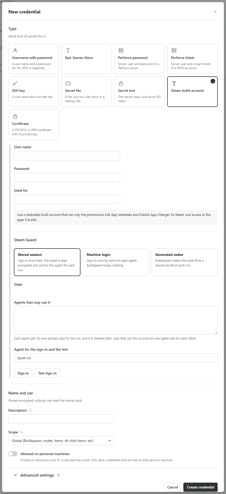

Steam build account
The credential that holds the Steam account your build signs in with, and how it handles Steam Guard.
When to use it
Create one for every Steam account the steps Steam upload, Steam: DRM wrap and Steam: workshop item use. The password and Steam Guard data stay in the credential. They are never typed into a step, written into a script or shown in the log.
Use a dedicated build account with only the permissions Edit App Metadata and Publish App Changes To Steam, and access to the apps it builds.
How to set it up
- Open the project (or Manage Buildspawn › Credentials for the whole server) and go to its Credentials. Click Add credentials.
- Choose the kind Steam build account.
- Fill in User name and Password.
- Choose a Steam Guard mode (below) and follow its steps.
- Click Save.

Every field
| Field | What it does | Default | Example |
|---|---|---|---|
| User name | The account name, not an email address. | None | skyforge_build |
| Password | The account password. Stored encrypted and never shown. | None | |
| Used for | A note for people, such as which game the account is for. Not enforced. | Empty | Skyforge only |
| Steam Guard | One of three cards: Stored session, Machine login, Generated codes. | Stored session | Stored session |
| Agents that may use it | One agent name per line. Empty means any agent. | Empty | win-build-01 |
| Agent for the sign-in and the test | Which agent runs the sign-in or the test. The built-in node is also offered. | First in the list | win-build-01 |
The buttons Sign in and Test sign-in run SteamCMD on that agent.
The three Steam Guard modes
Stored session (default)
You sign in once on the credential. Click Sign in, type the Steam Guard code Steam sends you, and click the button in the dialog. The result is kept encrypted in the credential, sent to the agent for each run and then removed from it. The State shows Ready, Sign-in expired or Never signed in, and who signed in. If Steam changes the stored session during a run, Buildspawn saves the new one back.
Each agent gets its own private copy. Jobs that use this account on one agent wait for each other.
Machine login
Sign in once by hand on each agent, in its SteamCMD folder. Buildspawn never sees the files. The step signs in with the account name only, so no password is used. Never sign in again with a password on that agent, because that changes the Steam Guard token.
Generated codes
Type the Shared secret of the account's Steam authenticator. Buildspawn makes the Steam Guard code from it at each run, so no one needs to sign in.
This is not an official feature of Steam. The shared secret is the second factor of the account and it is kept on this server. Use it only for an account that can do nothing but build.
A worked example
Create the credential steam-build for the user skyforge_build. Keep Stored session, pick the agent win-build-01, click Sign in, type the code Steam emailed you, and save. The State changes to Ready. In your Steam upload step, choose steam-build.
What you see when it runs
- The step log shows account skyforge_build (credential steam-build, stored session), app …. The password is never shown.
- When the stored session was renewed: The stored session of … was refreshed.
- Test sign-in shows Signed in as skyforge_build.
Problems and fixes
| Message | What to do |
|---|---|
| Steam asked for a Steam Guard code. Sign in again on the credential | Stored session ran out. Click Sign in again. Buildspawn does not retry a login, to protect the account. |
| Steam asked for a Steam Guard code for … Sign in again by hand on the agent | Machine login: sign in by hand in the agent's SteamCMD folder. |
| Steam refused the password for the account … | Fix the password and save. |
| The sign-in of … has expired | The credential is marked Sign-in expired. Sign in again. |
| The build account … may not be used on the agent … | Add the agent to Agents that may use it or empty the list. |
| The Steam build account … does not exist, or this job may not use it | Create it where the build configuration can see it, such as its project. |
| Gave up waiting for the build account … after … minutes | Another Steam step is holding the account on that agent. Wait, or use another account or agent. |
| The agent … is not there or is offline | Choose an online agent for the sign-in. |
| SteamCMD could not reach Steam | Check the network or proxy on the agent. |